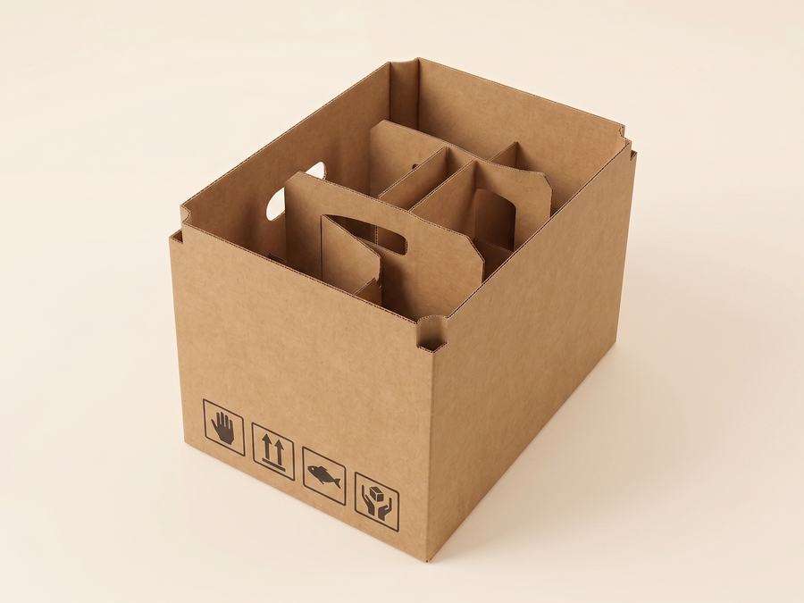

Уголок работает снаружи: он надевается на ребро паллеты или короба и принимает на себя давление ленты и стретча. Прокладки и решётки работают внутри: делят короб на ячейки и не дают товару двигаться.
Зачем нужен защитный уголок
Когда паллету стягивают лентой, всё натяжение приходится на четыре ребра — и лента режет верхние коробки. Уголок распределяет это давление по всей длине ребра: товар не мнётся, обвязка держит крепче. Он же спасает углы при штабелировании, когда верхний груз пытается продавить упаковку по краю.
У нас это уголок 50×50 мм с толщиной стенки 4 мм и длиной 1000–2000 мм. Считается он в метрах погонных: 0,58 руб./м.п. без НДС, а от 3000 м.п. — 0,55 руб./м.п. Применяют его в упаковке продуктов питания, строительных и кровельных материалов, бытовой техники, мебели и дверей, бумаги и картона, металлопроката.
Толщина стенки уголка важна не меньше, чем его размер по грани. Уголок 4 мм держит форму под лентой и не «складывается» при натяжении обвязочной машины, а тонкий уголок на тяжёлой паллете со временем сминается и перестаёт защищать ребро — особенно на длинных, от 1500 мм, отрезках.
Зачем нужны прокладки и решётки
Решётка делит короб на ячейки, прокладка отделяет ряды друг от друга. Стекло, банки, бутылки и другой хрупкий груз перестают стучать друг о друга — а именно от этого чаще всего бьётся товар, а не от ударов снаружи. Высекаем их по вашему изделию, вплоть до готовой тары с ручкой и перегородками под бокалы или бутылки.
Уголки или прокладки: что решает какую задачу
Работают снаружи короба или паллеты. Нужны, когда груз стягивают лентой или стретчем, штабелируют в несколько рядов или везут на дальнее плечо — уголок бережёт рёбра и углы от смятия и порезов лентой.
Работают внутри короба. Нужны, когда в одной таре едет несколько хрупких или разнородных изделий — бутылки, банки, стекло, комплекты деталей — и важно, чтобы они не стучали и не тёрлись друг о друга в пути.
Когда достаточно обычного короба
| Ситуация | Что нужно |
|---|---|
| Товар плотно занимает короб, не хрупкий | Достаточно короба |
| Внутри несколько хрупких изделий | Короб + решётка или прокладки |
| Груз едет на паллете под стяжкой | Короба + защитные уголки по рёбрам |
| Высокий штабель на складе | Уголки + более прочная марка картона |
| Ремонт, переезд, защита поверхностей | Листовой укрывной картон |
Цены и размеры — на страницах «Защитные уголки» и «Прокладки и решётки».
Когда без защиты не обойтись
| Ситуация | Риск без защиты | Что использовать |
|---|---|---|
| Тяжёлый товар на паллете под стяжкой лентой | Лента продавливает ребро короба, деформация груза | Защитные уголки на все вертикальные рёбра |
| Стеклянные/хрупкие изделия в коробе | Бой при ударе или давлении сверху | Внутренние прокладки/решётки, разделяющие ячейки |
| Крупная бытовая техника | Повреждение углов и граней при перевозке | Усиленные уголки + пенопластовые/картонные вставки по углам |
| Штабелирование в несколько ярусов на складе | Нижние короба сминаются под весом | Уголки по вертикали + распределяющие прокладки между ярусами |
Если груз попадает в один из этих сценариев, обычного короба обычно не хватает — уголки и прокладки здесь не опция «на всякий случай», а часть конструкции, которая должна выдержать конкретную нагрузку в пути.



Что дешевле: усилить короб или зафиксировать товар
Часто выгоднее второе. Переход на более толстый картон удорожает каждую единицу тиража, а вкладыш решает конкретную проблему — болтанку внутри. Сравнение марок по прочности разобрано в статьях три или пять слоёв и марки гофрокартона. Если не уверены, что выбрать, — пришлите фото товара и опишите перевозку, подскажем.
Частые ошибки
- Ставят уголок только по вертикальным рёбрам паллеты, но не усиливают верхнюю кромку — а именно по ней чаще всего режет лента при штабелировании.
- Берут уголок «на глаз» по длине, без запаса — короткий отрезок не доходит до угла и оставляет ребро без защиты именно там, где давление максимально.
- Заказывают решётку без точных размеров изделия — ячейка получается либо впритык, и товар в неё не входит, либо слишком свободной, и защита не работает.
- Экономят на прокладках при перевозке хрупкого товара, рассчитывая на плотную набивку коробом «в упор» — при тряске в дороге этого недостаточно.